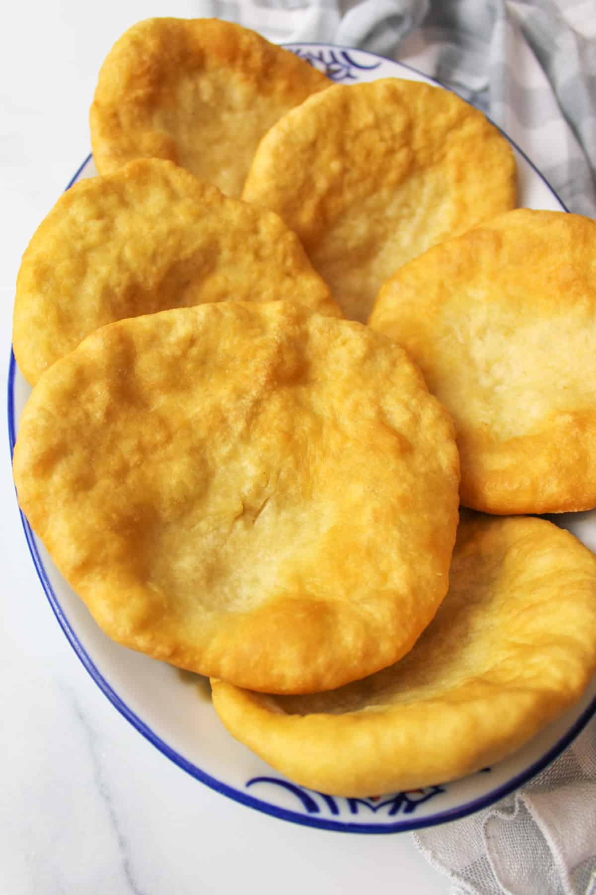

Native American Fry Bread

Description
Fry bread is a dish of the indigenous people of North America that is a flat dough bread, fried or deep-fried in oil, shortening, or lard.
Made with simple ingredients, generally wheat flour, water, salt, and sometimes baking powder, frybread can be eaten alone or with various toppings such as honey, jam, powdered sugar, venison, or beef. It is the base for Indian tacos.
Frybread has a complex cultural history that is inextricably intertwined with colonialism and displacement of Native Americans. The ingredients for frybread were provided to Native Americans to prevent them from starving when they were moved from areas where they could grow and forage their traditional foods to areas that would not support their traditional foods. Critics see the dish as both a symbol of colonization and a symbol of resilience.
Ingredients
- 2 cups all-purpose flour
- 1 tbls baking powder
- 1 tsp salt
- 1 cup steaming tap water
- vegetable oil for frying
Directions
- Mix ingredients together with a fork in a medium bowl for a sticky dough.
- Liberally grease your hands with vegetable oil and shape dough into a ball.
Leave dough in bowl and cover with a towel and set in warm place for atleast 20 minutes, but leaving longer makes the bread fluffier.
- When you are ready to make the bread, heat vegetable oil, at least 1 inch deep or deeper in a frying pan. (around 375 degrees) Test a small ball of dough in grease, it should float in grease, not sit on the bottom, if it doesn't immediately float, the oil is not hot enough.
- When the oil is ready, grab a ball of dough a little bigger than a golf ball and stretch out in your greased hands. Flatten it out about the size of a large cookie. Poke a small hole in the center of the dough with your fingers, and carefully lay in the hot oil.
- Let dough cook to a golden brown before turning over and frying other side.
- Drain on paper towels and serve immediately.